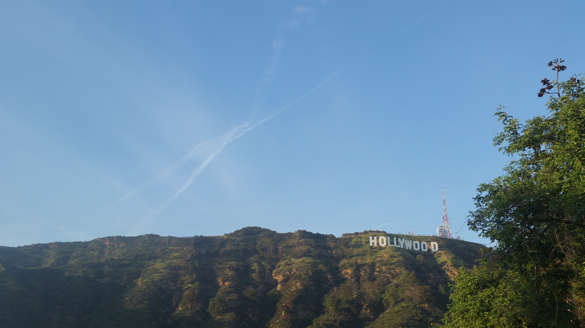
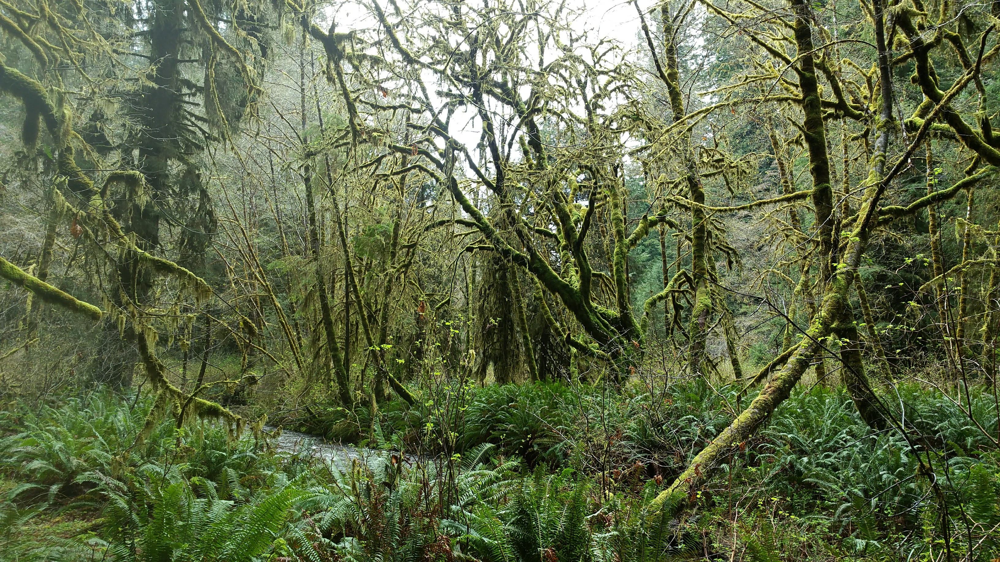
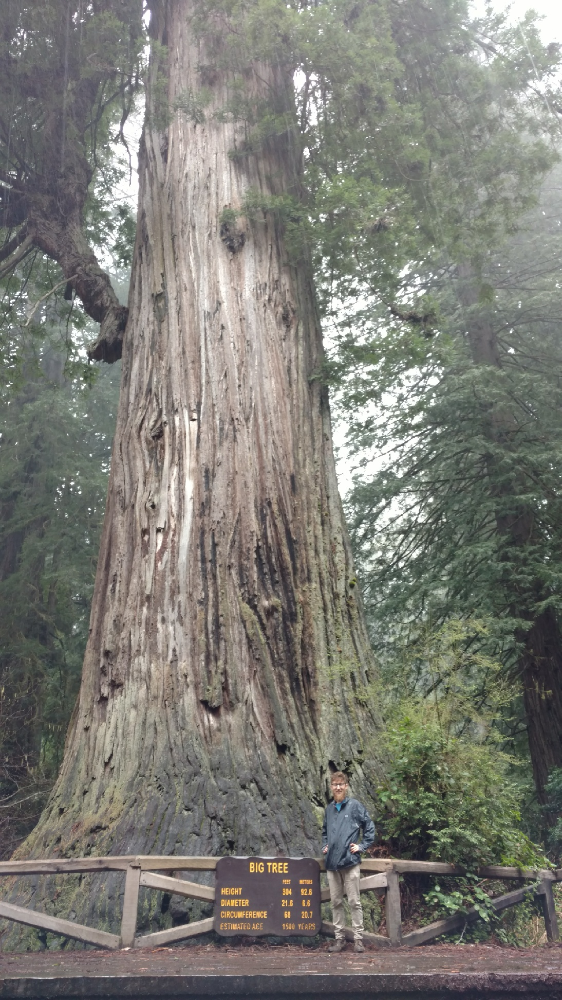

Hello hello, thanks for stopping in. We've had a lovely past few days, although almost none of them were as planned! (More on that later.) From Palm Springs we headed back into LA, stopped along Hollywood Boulevard to walk and see the stars (and dodge the endless supply of people hawking shit...), and drove through the hills to catch a great view of the Hollywood sign! We also learned--firsthand--that most of the "Hollywood Studios" are actually on the other side of the hills, in Burbank. The more you know!
The view from the hills themselves
We slept at a lovely campsite in the Angeles National Forest (California has thusfar really impressed me with its conservation), but then we ran into a major snag in plans. If you remember from my last post, I said that we would be heading into Sequoia National Park, because the weather was cooperating. Well, it stopped cooperating. On the Sequoia, Kings Canyon, and Yosemite National Parks' websites we saw warnings for two to four (4!!!) feet of snow coming over the next week--yikes!!
That forced us to Plan B--which we came up with right then: skip those three parks, for now, and come back to them on our southern swing in another month or two. It seemed kind of ridiculous, but we are NOT going to miss those parks or trees!!
So we drove across the entire midland of California in a day, and ended our journey at Big Sur. The official Pfeiffer Big Sur State Park was devastated by wildfires and flooding over the past year, which lead to more changes in plans. Many of the beaches, hot springs, and waterfalls we had heard so much about were entirely inaccessible (alongside many locals' homes, forcing them to get groceries by helicopter or hike...), and we spent St Patty's Day on a very different beach, which still was magical. It was also crowded with adorable sea otters!

Such a stark coastline
During this I managed to get in touch with my friend Sophie from high school, who lives in San Francisco. She adapted to our last-minute changes and welcomed us into her home to spend a weekend in the city! She took us to see the local sights, including the Painted Ladies from the Full House intro! Dolores Park was a crazy fun time, but the peak of the trip was seeing the Golden Gate Bridge and Muir Woods across the bridge! I couldn't believe how deep and pristine the Redwood forests were, just 20 minutes from downtown San Francisco. It was far-and-away our favorite city of the trip so far, and I'm now very tempted to move there...

Surrounded by beautiful Redwoods!
We were fortunate enough to catch my friend Ryan on his lunch break, which also let us see the true SF downtown (unexpected amounts of Chinese, but very cool nonetheless), but from there we were headed north! We drove the long and beautiful way through northern California, passing through Redwood groves and misty valleys alike. I was captivated by all the beauty.
Then it was time to explore Redwood National and State Parks (the first of its kind that we've encountered, where the state and national parks are basically the same), full of some of the most lush, green beauty I've ever seen in my life. The entire area has been saturated with rain all winter, and there was just so. much. life!! We hiked all throughout, and got to see the Big Tree (over 300ft tall!)
#nofilter
Look at that friggin thing!

There were tons of these hungry little guys
From there, we've continued northward up the coast, spending an evening on the sea cliffs in Crescent City. Now we find ourselves in Grants Pass, Oregon! We just stopped in at the local Off the Map Tattoo shop, which is super cool. Tomorrow, we're braving the mountain snow to head up to Crater Lake National Park! Very excited. After that, spending some time in southern Oregon with Lacey's friend... then northward some more!
Also, I made a beat today, just for fun. You can also check it on my singles page, it's second from the bottom.
Thanks for reading, stay tuned for more!
Mileage: 14600
Weather: Rainy, cool, 55F
Currently listening to: Neutral Milk Hotel - In The Aeroplane Over The Sea